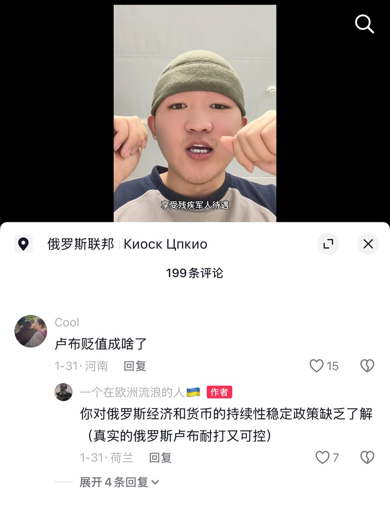

拱北靠北
@psyofsouthwest
@whyyoutouzhele 看来琼瑶小说里写得没错，失去一条腿确实不是啥大事

李老师不是你老师
@whyyoutouzhele
近日，一名中国男子前往俄罗斯参军仅两个月后，就在战斗中被炸断一条腿。他在镜头前情绪亢奋地谈及俄罗斯的伤残补助政策。
男子称，若在战斗中阵亡，可获得约1000万卢布，但前提是必须找到遗体，否则只能按“失踪”处理；若因战争致残，则可获得约300万至400万卢布的补助。 https://t.co/BrFJG9nVxj